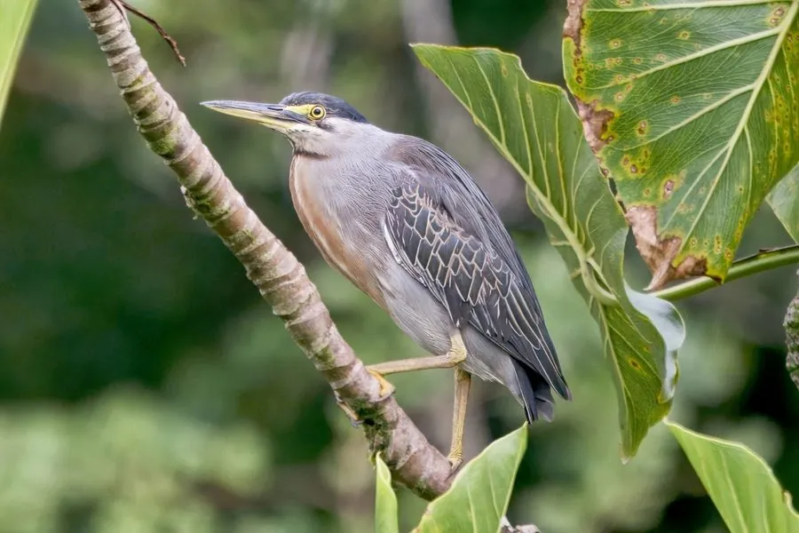

鸟类 · 动物界
绿鹭 Butorides striata

体形矮小的深色鹭类，头顶黑绿、背羽灰绿，喜栖溪流与红树林，会叼面包屑或小虫投入水中作饵诱鱼，是少数会用工具的鸟类。
- 分类
- 门脊索动物门纲鸟纲目鹈形目科鹭科属绿鹭属
- 栖息环境
- 溪流、池塘、河口、红树林、稻田与城市公园水岸的枝叶间
- 地理分布
- 全球热带与亚热带湿地，包括南美、非洲、南亚、东南亚与澳大利亚
- 保护级别
- IUCN 无危（LC）；中国列为有重要生态、科学、社会价值的陆生野生动物
物种志
绿鹭体长约 40–48 厘米，翼展 60–70 厘米，体重 200–350 克，在鹭科中属于小型种类。头顶与羽冠呈黑绿色，颊部与颈侧灰白，背部灰绿并具金属光泽，翼羽暗灰绿带浅色羽缘，腹部灰白，前颈有褐色纵纹。喙细长而尖，呈黑色，腿短，呈黄绿色至橙黄色。
它们广布于全球热带与亚热带湿地，栖息于溪流、池塘、河口、红树林和稻田边，多单独活动，隐蔽在岸边枝叶间静候猎物。捕食鱼、虾、蛙、昆虫与甲壳类，最著名的是用饵钓鱼：会把面包屑、浆果、小虫或羽毛投入水面，吸引小鱼前来再迅速啄食。繁殖期在树上或灌丛中筑巢，每窝 2–5 枚卵，双亲孵卵约 21–25 天。它对人类干扰较敏感，但适应力强，在城市公园的水边也能见到。
形态与习性
- 体长约 40–48 cm，翼展 60–70 cm
- 体重约 200–350 g
- 食性小鱼、虾、蛙、昆虫与甲壳类
- 繁殖每窝 2–5 枚卵，双亲孵卵约 21–25 天
- 工具行为会叼面包屑、小虫或羽毛投入水中作饵诱鱼
- 羽色头顶黑绿、背部灰绿带金属光泽、腹部灰白
- 寿命野外约 8 年，最长记录约 12 年
趣味知识
- 绿鹭会把小虫或面包屑丢进水里当鱼饵，等鱼靠近再一口叼起。
- 它是少数被证实会使用工具诱捕猎物的鸟类之一。
- 绿鹭个头只有大白鹭的一半，却同样喜欢独自守在岸边伏击。